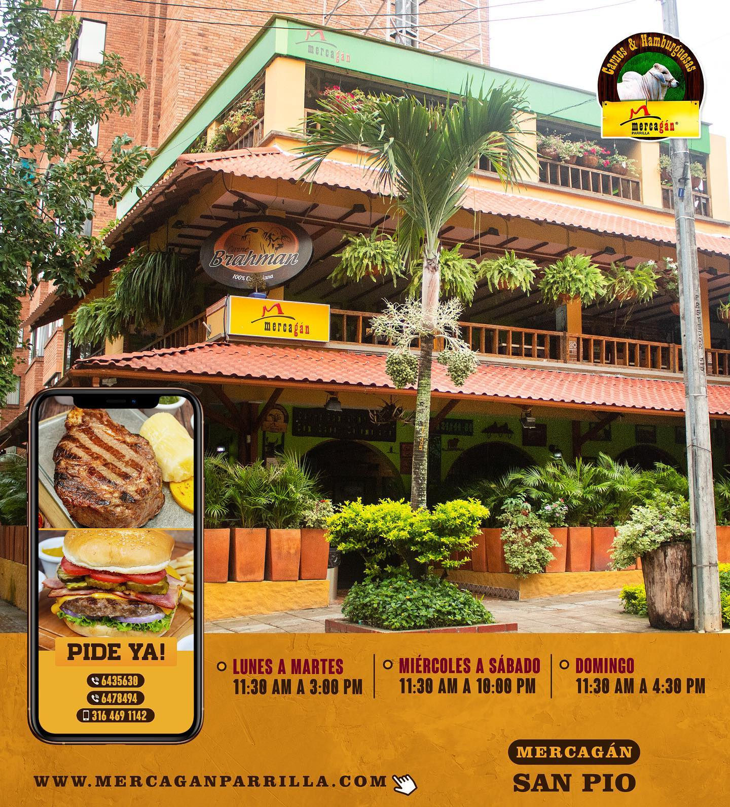

Bucaramanga is one of the most visited cities in Colombia, it is known as "the pretty city" and "the city of parks". Bucaramanga has a pleasant weather with average temperatures around 22 degrees celcius all year. In the following you can find touristic suggestions to get the most of your trip to Bucaramanga.
Visit the parks
As mentioned above, Bucaramanga has many parks that respect nature and the ecosystem, so one of the activities you can do is walk through some of its parks and get to know them. Information about parks in Bucaramanga follow this link. Among the most popular parks, we recommend to visit:
San Pio Park
Located in the Cabecera neighborhood, it is one of the largest parks of the city, with approximately 233 trees. It has an emblematic piece of art, the "Standing nude girl", sculpted by the internationally known Colombian artist Fernando Botero. Around the park you can find several restaurants, accessible transportation, and shopping areas.
La flora Park
La flora is an ecological park known as the lung of Bucaramanga. It has wide and long trails full of nature. This site is full of flora and fauna and many green spaces with spaces for exercising. This site is ideal for a picnic or simply to enjoy the fresh air surrounded by nature.
Taste traditional and delicious food
Around the San Pio park, you can find restaurants with delicious and traditional Santanderean food. A complete list of restaurants in the area can be found in this website. Our recommendations:

Mercagan (San Pio)
A traditional and famous steakhouse. The menu is available by choosing the "Mercagán San Pio" option at the following link.
Crepes & Waffles (San Pio)
A Colombian restaurant chain that serves handmade crepes and waffles, including desserts and ice cream, turning them into an art of love and joy. The menu is available at the following link.
Visit and enjoy La mesa de los Santos
We strongly recommend you to visit La Mesa de los Santos, a beautiful place full of nature and the purest Santanderean traditions. At La mesa de los Santos, you can see the famous Chicamocha Canyon with its beautiful views.
It has several activities, among which we recommend:
At the Acuarela Farmers Market, located at La mesa de los Santos, you can enjoy multiple dishes and purchase handcrafted souvenirs related to the local culture.
Le fritangué
Gastronomic destination at the farmers market, where you can taste picadas (a meat sampler with some carbs, e.g., potato and yuca), sweet corn arepas, and chorizo. Menu available at here.
Italian artisan gelato from La mesa
Gastronomic destination of international stature, where you can some italian-style ice cream. Menu.
The following videos provide a glimpse of what you can do at El mercado campesino.
Less than 2 km from the Mercado Campesino is a replica of a typical town with many family development activities in an open space. At Mi Colombia querida we recommend to visit the open-air butterfly garden and enjoy mountain biking.
One of the highlights of La Mesa de los Santos is to visit La hacienda El Roble, home of an internationally-awarded organic coffee. Guided farm tours and coffee tasting are available here , where you can learn a little more about its history.
The coffee tour costs only approximately US$8.55 and includes a visit to the museum of the 72 coffee varieties, a tasting of exotic types of coffee, followed by a tour of the main farm house. If you want to experience the feel of spending the night at a coffee farm, they also offer lodging.
The official store provides more information about their coffee and different products related to coffee tasting.
Contact - wacci2022@uis.edu.co Copyright
WACCI 2022 - All Rights Reserved